Tim Burton

Timothy Walter Burton (born August 25, 1958) is an American filmmaker and artist.
He was born in Burbank, California, to Jean Rae (Erickson), who owned a cat-themed gift shop, and William Reed Burton, who worked for the Burbank Park and Recreation Department.
He spent most of his childhood as a recluse, drawing cartoons, and watching old movies (he was especially fond of films with Vincent Price).
After graduating from high school, he attended California Institute of the Arts.
Burton also wrote and illustrated the poetry book The Melancholy Death of Oyster Boy & Other Stories, published in 1997 by British publishing house Faber and Faber,
and a compilation of his drawings, sketches, and other artwork, entitled The Art of Tim Burton, was released in 2009.
Like so many others who graduated from that school, Burton's first job was as an animator for Disney.
Filmography

As director and producer
Full-length films
| Year | Film | Director | Producer | Screenwriter |
|---|---|---|---|---|
| 1985 | Pee-wee's Big Adventure | yes | ||
| 1988 | Beetlejuice | yes | ||
| 1989 | Batman | yes | ||
| 1990 | Edward Scissorhands | yes | yes | Storyline |
| 1992 | Batman Returns | yes | yes | |
| 1993 | The Nightmare Before Christmas | yes | Storyline | |
| 1994 | Cabin Boy | yes | ||
| 1994 | Ed Wood | yes | yes | |
| 1995 | Batman Forever | yes | ||
| 1996 | James and the Giant Peach | yes | ||
| 1996 | Mars Attacks! | yes | yes | |
| 1999 | Sleepy Hollow | yes | ||
| 2001 | Planet of the Apes | yes | ||
| 2003 | Big Fish | yes | ||
| 2005 | Charlie and the Chocolate Factory | yes | ||
| 2005 | Tim Burton's Corpse Bride | yes | yes | Characters |
| 2007 | Sweeney Todd: The Demon Barber of Fleet Street | yes | ||
| 2009 | 9 | yes | ||
| 2010 | Alice in Wonderland | yes | ||
| 2012 | Dark Shadows | yes | ||
| 2012 | Abraham Lincoln: Vampire Hunter | yes | ||
| 2012 | Frankenweenie | yes | yes | Storyline |
| 2014 | Big Eyes | yes | yes | |
| 2016 | Alice Through the Looking Glass | yes | ||
| 2016 | Miss Peregrine's Home for Peculiar Children | yes | ||
| 2019 | Dumbo | yes | yes |
Short films
| Year | Film | Director | Producer | Screenwriter |
|---|---|---|---|---|
| 1971 | The Island of Doctor Agor | yes | yes | |
| 1971 | Prehistoric Cavemen | yes | ||
| 1972 | Tim's dreams | yes | ||
| 1974 | 1997 | yes | ||
| 1976 | Houdini: The Untold Story | yes | yes | |
| 1979 | Stalk of the Celery Monster | yes | yes | yes |
| 1979 | Doctor of Doom | yes | yes | |
| 1979 | King and Octopus | yes | ||
| 1982 | Vincent | yes | yes | |
| 1982 | Luau | yes | yes | yes |
| 1984 | Frankenweenie | yes | Idea | |
| 2013 | Captain Sparky vs. The Flying Saucers | yes |
Television and Internet
| Year | Film | Director | Producer | Screenwriter | Commentary |
|---|---|---|---|---|---|
| 1983 | Hansel and Gretel | yes | TV film | ||
| 1986 | Faerie Tale Theatre | yes | episode: Aladdin and His Wonderful Lamp | ||
| 1986 | Alfred Hitchcock Presents | yes | episode: The Jar | ||
| 1989-1991 | Beetlejuice | Executive Producer | Story by | 4 seasons/94 episodes | |
| 1993 | Family Dog | Executive Producer | 10 episodes | ||
| 2000 | Lost in Oz | Executive Producer | story | Unsold pilot episode | |
| 2000-2001 | The World of Stainboy | yes | yes | yes | Mini-series, 6 episodes |
| 2022 | Wednesday | yes | Executive Producer | Netflix |
Music videos
| Year | Musical performer | Track title | Director | Producer | Screenwriter |
|---|---|---|---|---|---|
| 2006 | The Killers | Bones | yes | yes | |
| 2012 | Linkin Park | Powerless | yes | ||
| 2012 | The Killers | Here with Me | yes | ||
| 2020 | Chelsea Grin | Blind Kings | yes |
Commercials
| Year | Title | Subject of advertising |
|---|---|---|
| 1998 | Garden Gnome | Hollywood Chewing Gum |
| 1999 | Kung-fu | Wristwatches Timex |
| 2000 | Mannequin | Wristwatches Timex |
As an actor
Full-length films
| Year | Film | Film role |
|---|---|---|
| 1979 | The Muppet Movie | The Puppeteer |
| 1985 | Pee-wee's Big Adventure | The bandit in the alley |
| 1989 | Batman | An unidentified cameo |
| 1992 | Hoffa | The corpse |
| 1992 | Singles | Brian |
| 2012 | Men in Black 3 | An alien from the TV monitor |
| 2016 | Miss Peregrine's Home for Peculiar Children | A visitor to the attraction |
Short films
| Year | Film | Film role |
|---|---|---|
| 1971 | The Island of Doctor Agor | Doctor Agor |
| 1972 | Tim's dreams | Tim |
| 1976 | Houdini: The Untold Story | Houdini |
| 1979 | Stalk of the Celery Monster | Maxwell Payne |
| 1979 | Doctor of Doom | Don Carlo |
| 1982 | Luau | Supreme Being/Morty |
| 2012 | Vampire's Kiss | Van Helsing |
Commercials
| Year | Title | Role | Subject of advertising |
|---|---|---|---|
| 2013 | Unicorn Apocalypse | Cameo | Samsung's mobile game "Unicorn Apocalypse" |
As an artist
Full-length films
| Year | Film | Commentary |
|---|---|---|
| 1978 | The Lord of the Rings | Artist |
| 1981 | The Fox and the Hound | Animator |
| 1982 | Tron | Animator |
| 1985 | The Black Cauldron | Conceptual artist |
| 1992 | Stay Tuned | Design consultant |
Short films
| Year | Film | Commentary |
|---|---|---|
| 1971 | The Island of Doctor Agor | Animator |
| 1971 | Prehistoric Cavemen | Animator |
| 1978 | Welcome To My Nightmare | Animator | 1979 | Stalk of the Celery Monster | Animator |
| 1982 | Luau | Animator |
| 1982 | Vincent | Art Director |
| 1984 | Frankenweenie | Storyboard artist |
Television and Internet
| Year | Project | Worked as | Notes |
|---|---|---|---|
| 1983 | Hansel and Gretel | Production designer | TV film |
| 1987 | Amazing Stories | Animation designer | Episode: "Family Dog" |
| 1993 | Family Dog | Design consultant | 10 episodes |
| 1997 | The New Adventures of Zorro | Creative Advisor | 3 episode |
| 2000-2001 | The World of Stainboy | Animation designer | Mini-series, 6 episodes |
Bibliography
• 1997-The Melancholy Death of Oyster Boy and Other Stories
• 2009-The Art Of Tim Burton Book
• 2015-THE NAPKIN ART OF TIM BURTON : things you think about in a bar.
Full-length films
Pee-wee's Big Adventure
Beetlejuice
Batman
Edward Scissorhands
Batman Returns
The Nightmare Before Christmas
Cabin Boy
Ed Wood
Batman Forever
James and the Giant Peach
Mars Attacks!
Sleepy Hollow
Planet of the Apes
Big Fish
Charlie and the Chocolate Factory
Tim Burton's Corpse Bride
Sweeney Todd: The Demon Barber of Fleet Street
9
Alice in Wonderland
Dark Shadows
Abraham Lincoln: Vampire Hunter
Frankenweenie
Big Eyes
Alice Through the Looking Glass
Miss Peregrine's Home for Peculiar Children
Dumbo
Short films
The Island of Doctor Agor
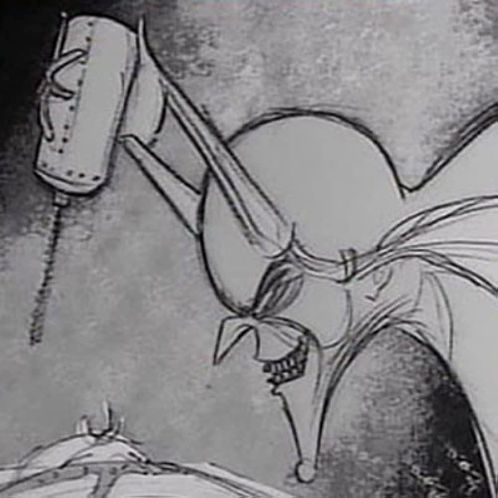
Prehistoric Cavemen
Tim's dreams
1997
Houdini: The Untold Story
Stalk of the Celery Monster
Doctor of Doom
King and Octopus
Vincent
Luau
Frankenweenie
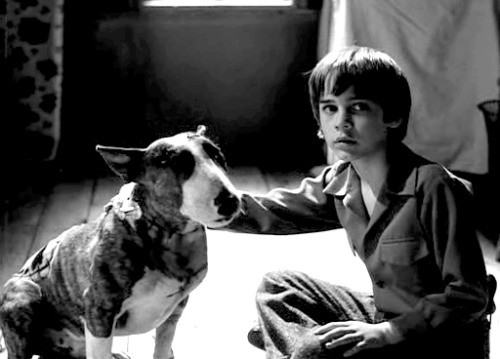
Captain Sparky vs. The Flying Saucers
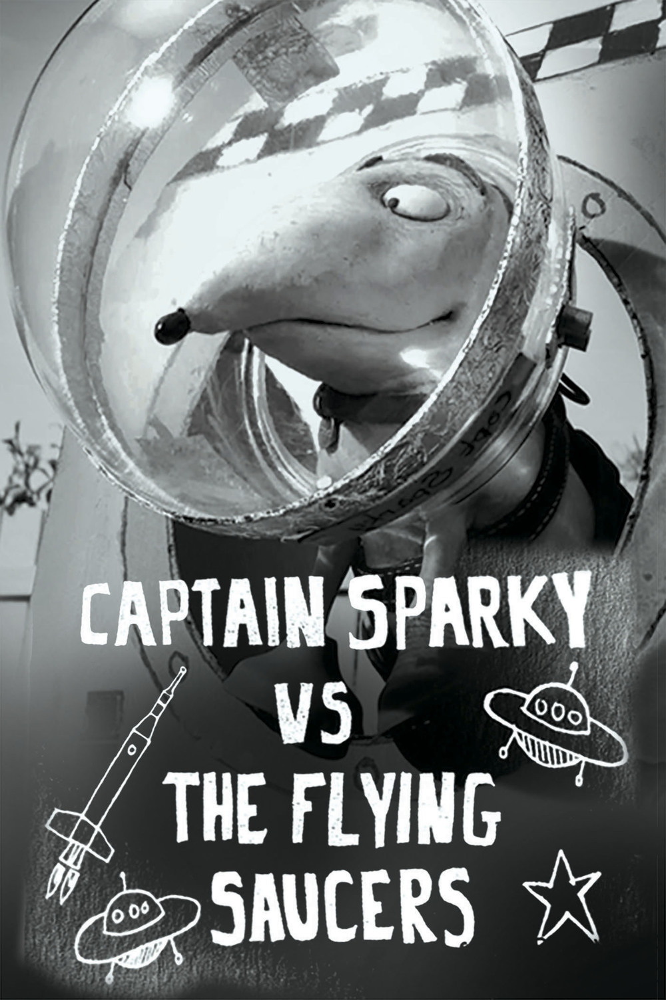
Television and Internet
Hansel and Gretel
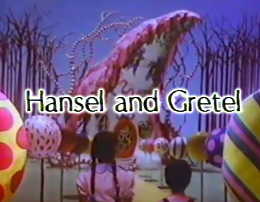
Faerie Tale Theatre. Еpisode: Aladdin and His Wonderful Lamp
Alfred Hitchcock Presents. Еpisode: The Jar
Beetlejuice
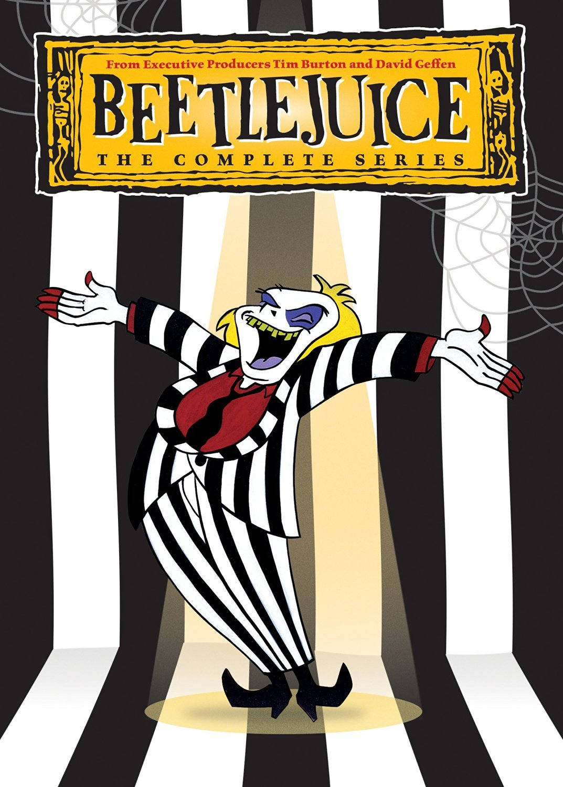
Family Dog
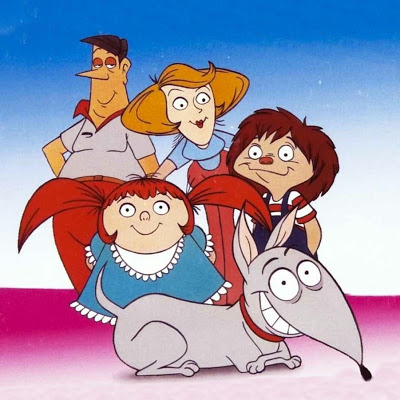
Lost in Oz
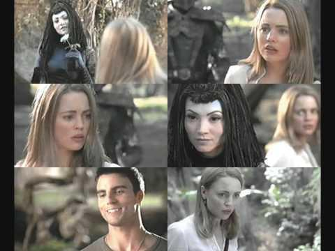
The World of Stainboy
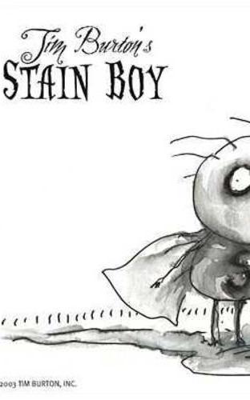
Wednesday
Music videos
The Killers - Bones
Linkin Park-Powerless
The Killers-Here with Me
Chelsea Grin-Blind Kings
Commercials
Garden Gnome-Hollywood Chewing Gum
Kung-fu-Wristwatches Timex
Mannequin-Wristwatches Timex
As an actor
Full-length films
The Muppet Movie

Pee-wee's Big Adventure-The bandit in the alley
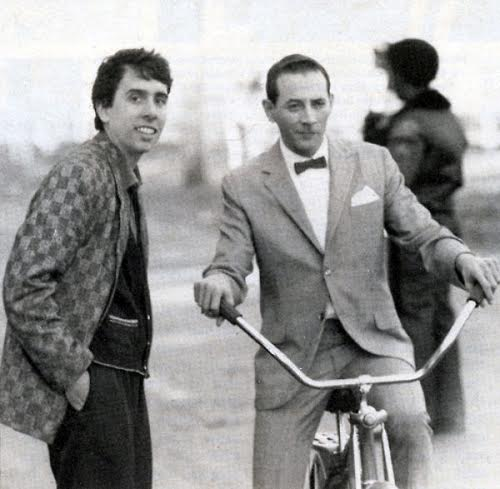
Batman
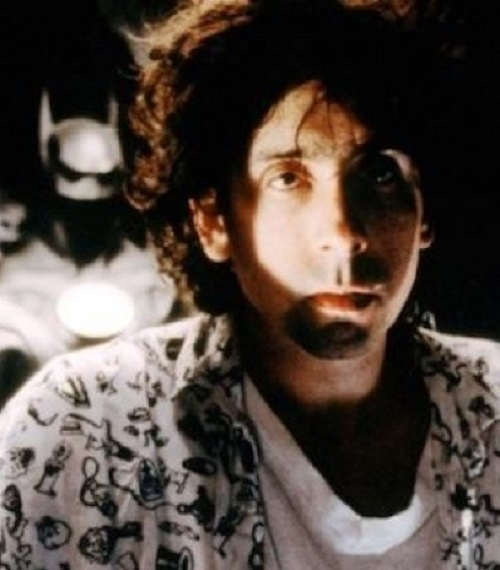
Hoffa
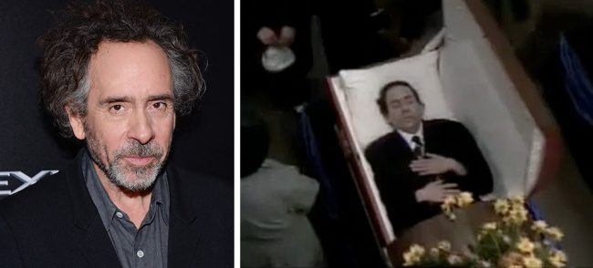
Singles
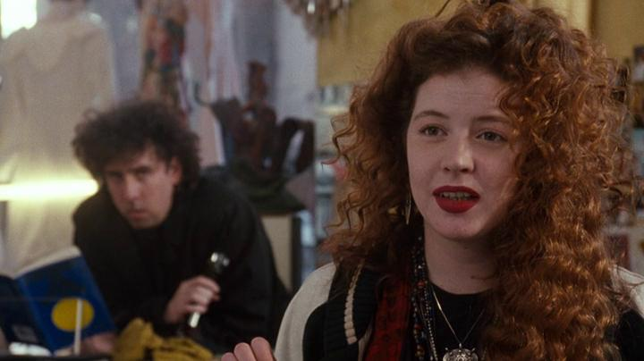
Men in Black 3
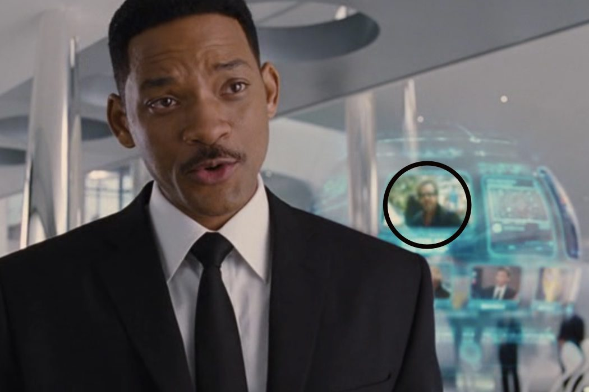
Miss Peregrine's Home for Peculiar Children
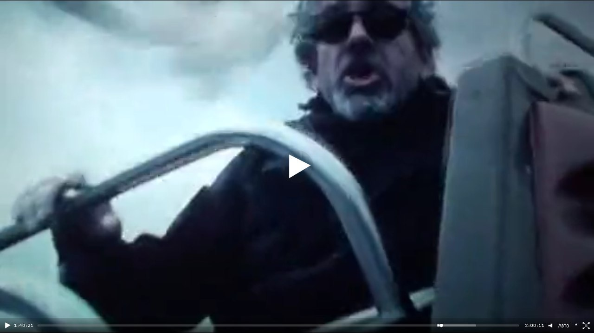